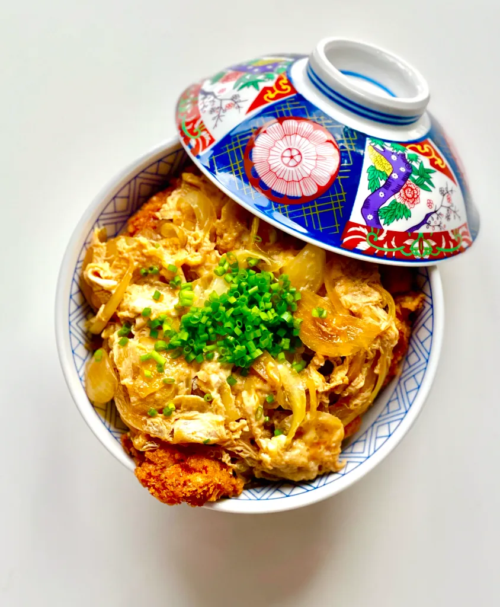

Katsudon
Spicy Noodles
Autumn Squash Soup
Katsudon

Katsudon that's crispy and juicy at the same time. This recipe has a simple trick that can elevate the dish infinitely.
Ingredients:
- 2 Pork shoulder/loin steak or filleted chicken breast/thigh (150g)
- 1 white onion, thinly sliced
- 1 egg
- 2 cups cooked white rice
- 1 cup AP flour
- Neutral oil for frying
- 2 cups panko breadcrumbs
- ½ cup AP flour
- ½ cup water
- 1 egg
- 1 tsp salt
- 1 cup stock (dashi, chicken, veggie all works!)
- 2 tbsp sake
- 2 tbsp mirin
- 2 tbsp soy sauce
- 2 tbsp sugar
- eggs
Steps:
- Pat the meat down with a kitchen towel. Using the back of your knife or a meat hammer, tenderize the meat. Aim for the meat to be in even thickness to ensure that the katsu cooks evenly
- Season the meat with a generous amount of kosher salt and pepper.
- Prepare the assembly line: pour flour into a rimmed baking tray, batter in a bowl, and panko into a baking tray. /li>
- Heat your oil on medium-high heat.
- Coat the meat in the flour. Make sure to get every side coated. Dust off any excess flour. (Use right hand)
- Drop the floured meat into the batter. Coat both sides. Let excess batter drip off. (Use left hand)
- Tightly pack the cutlet with panko. Press down firmly so that the panko can stick on.
- Test the oil temp. If you don't have a thermometer, drop a bit of the batter into the oil. The batter should sink to the middle for half a second and pop right up to the top sizzling. If you have a thermometer, aim for 180C/ 355F. The oil temperature is slightly higher than your average frying temperature at this point because we're accounting for the meat to drop the temperature to around 176C / 350F.
- Gently drop the katsu away from your body so that the oil won't splatter on you.
- Fry on each side for 2 minutes or until golden brown.
- Crank the heat up high for the final 30 seconds before taking the katsu out on a wired baking tray.
- Let the katsu rest. This resting process helps the meat absorb its juices and residual heat to make the katsu crispier.
- In a small nonstick pan or a donburi pan, add the sauce.
- Heat on high until the sauce starts simmering.
- Add half of the sliced onions. Cook until the onions have turned slightly translucent.
- Beat one egg. Do not overbeat as this will incorporate too much air.
- Drizzle in the egg mixture on top of the sauce in a circular motion, starting from the center.
- Cook the mixture for additional 30 seconds. Turn the heat off when the egg is still runny in the center. The residual heat will cook the egg.
- Cut the katsu into bite-sized pieces. Place on top of rice.
- Gently pour the sauce on top. Enjoy!